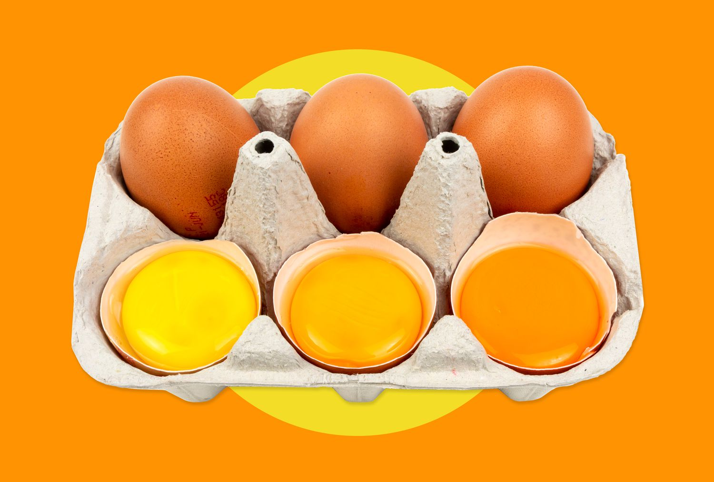
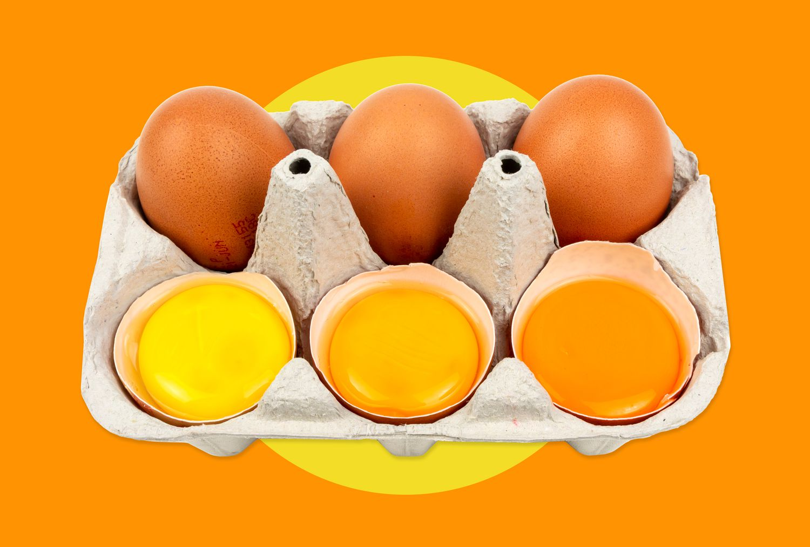

Crema Catalana
Servings: 4
Time: 30 minutes (plus chilling time)
Difficulty: Medium

Ingredients
- 500 ml (2 cups) whole milk
- 100 g (½ cup) granulated sugar
- 4 egg yolks
- 25 g (2 tbsp) cornstarch
- 1 cinnamon stick
- Zest of 1 lemon
- 4 tbsp sugar (for caramelizing)
 


How to Make Crema Catalana
Crema Catalana, often considered Spain’s answer to crème brûlée, is a traditional Catalan dessert dating back to at least the 14th century. Unlike its French counterpart, it is thickened with cornstarch and cooked on the stovetop rather than baked in a water bath. The result is a creamy custard topped with a signature caramelized sugar crust.
1. Infuse the milk – In a saucepan, heat the milk with the lemon zest and cinnamon stick over medium heat. Once it starts to simmer, remove from heat and let it steep for a few minutes.
2. Mix the eggs and sugar – In a bowl, whisk together the egg yolks, sugar, and cornstarch until smooth and pale.
3. Combine and cook – Remove the cinnamon and zest from the milk. Slowly pour the warm milk into the egg mixture while whisking continuously. Return the mixture to the saucepan and cook over low heat, stirring constantly, until it thickens.
4. Chill – Pour the custard into individual ramekins and let them cool at room temperature before refrigerating for at least 2 hours.
5. Caramelize the top – Just before serving, sprinkle sugar evenly over each custard and use a kitchen torch to caramelize until golden and crispy.
Crema Catalana is best enjoyed freshly caramelized, offering a perfect contrast between the creamy custard and the crunchy sugar crust. It’s a classic dessert that showcases the rich culinary heritage of Catalonia.